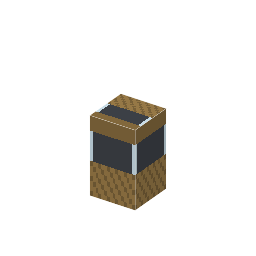

アセチレンランプ（カーバイドランプ）
Acetylene Lamp (Carbide Lamp)・ブロック・Branches
仮（まだ本物どおりでない所がある）
本当の歴史：[B-14] アセチレンランプ（1892年）

説明
①子ども カーバイドを入れると、水がたれてガスが出て、明るく燃えるランプ。
②学生 鉄4＋ソーダ石灰ガラスで作る。カーバイド（A の [3-25]）を持って右クリック → 明るさ15で光る。数分で燃え尽きる。燃え尽きたランプにまたカーバイドを入れると、かすの消石灰が出てくる。⚠ アセチレンは可燃性ガス（GHS）。
③大人 CaC2 + 2H2O → C2H2 + Ca(OH)2。アセチレンの炎は温度が高く、すすの小さな粒が強く光るので、とても明るい白い光になる。
④ガチ 1892年カナダ生まれのウィルソンが、アルミを作ろうとしてアーク炉で石灰と炭を熱し、偶然カーバイドを作った。20世紀の前半、炭鉱夫のヘルメットのランプや自転車・自動車のライトに使われた。
作り方
使い道
（このアイテムを使うレシピは無い）